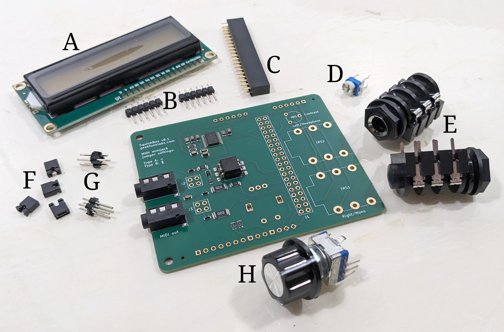
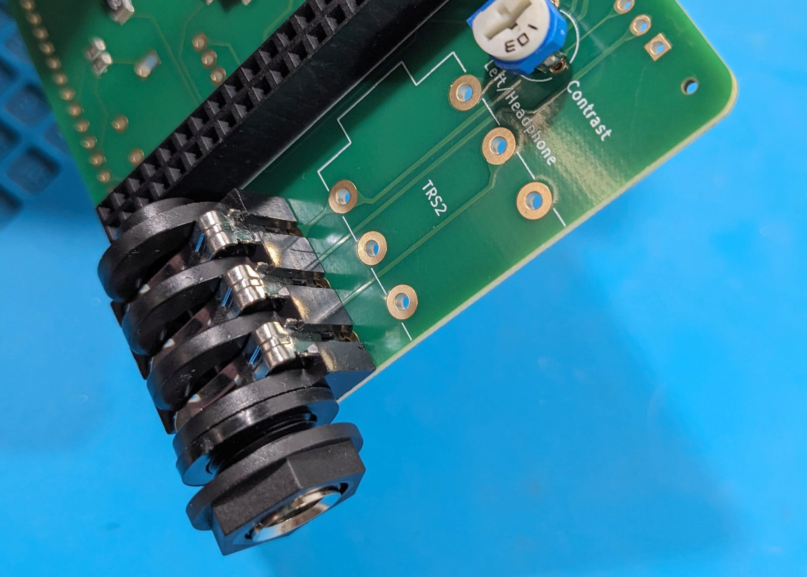
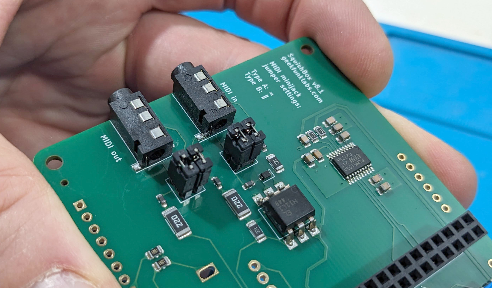
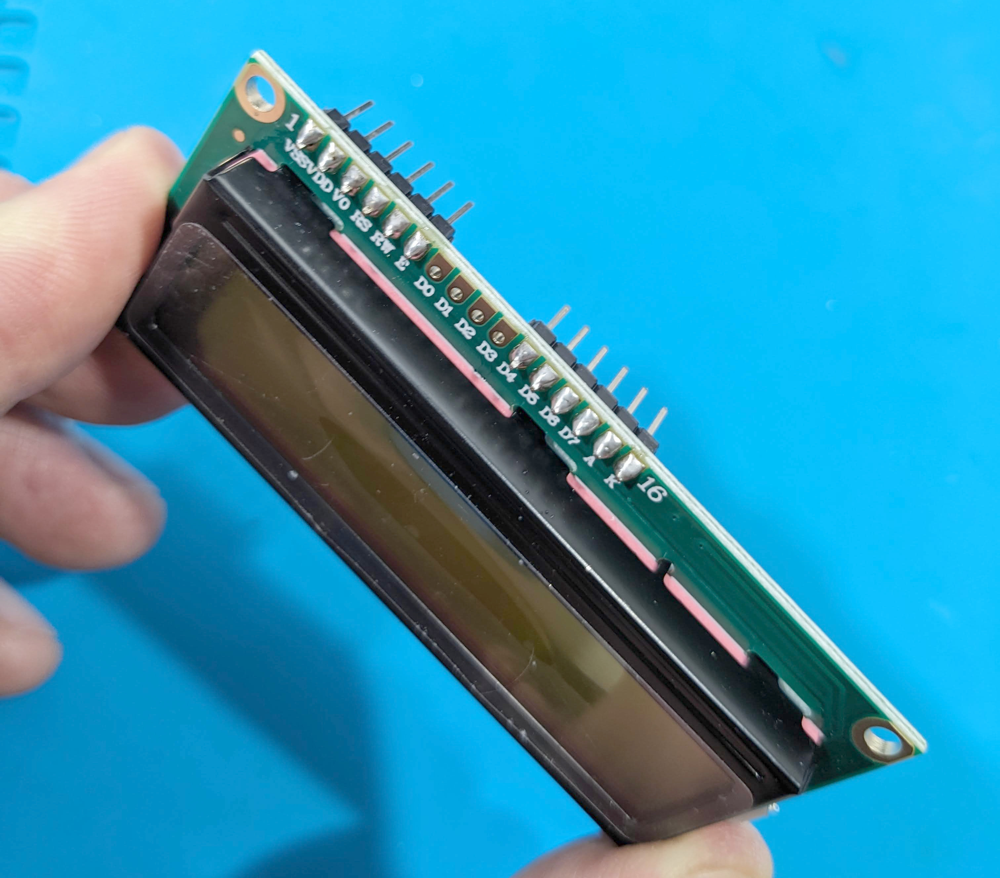
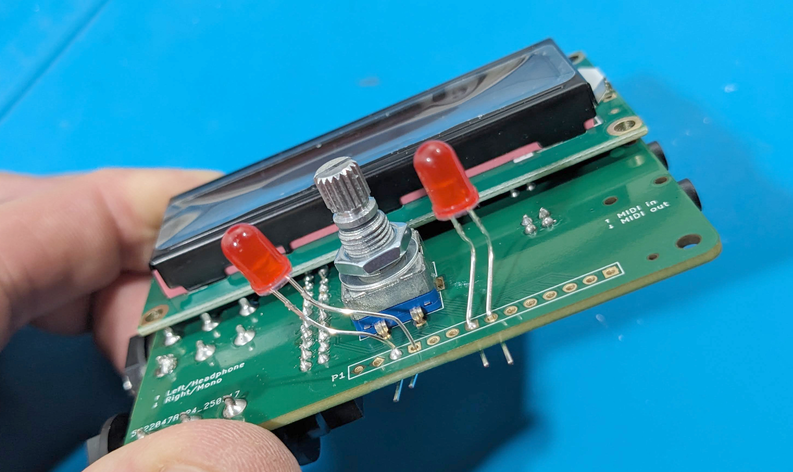
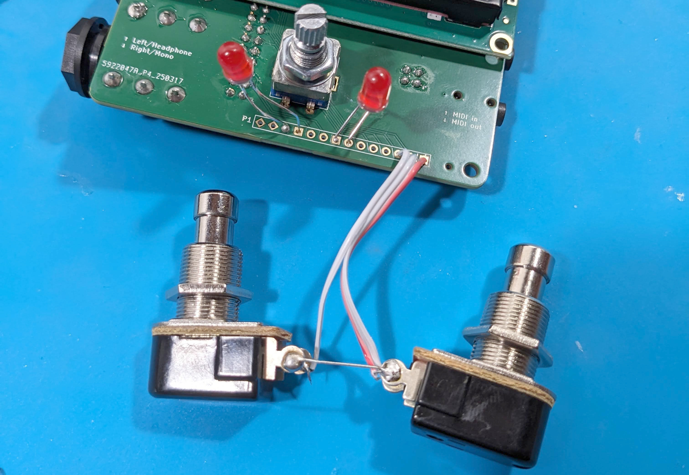
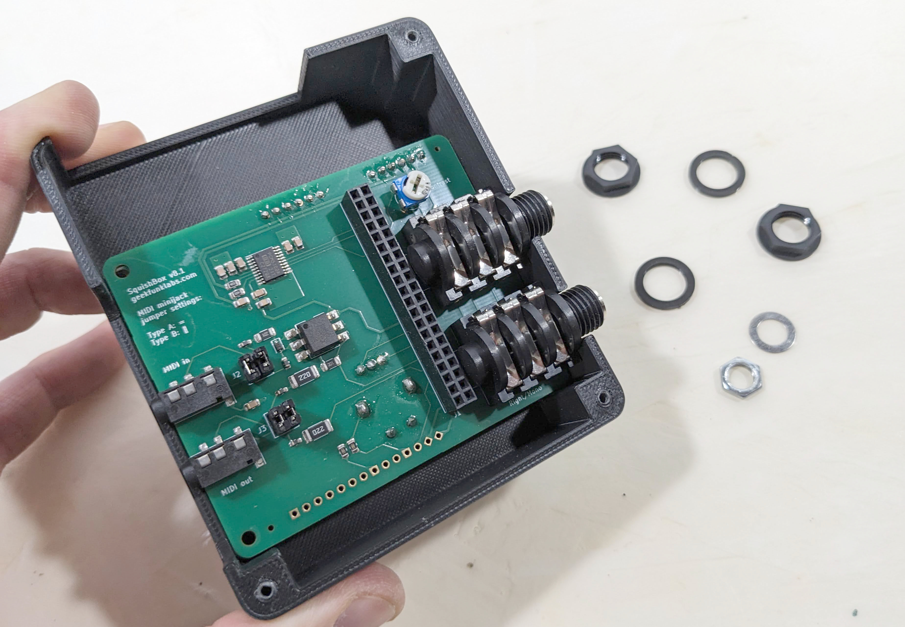
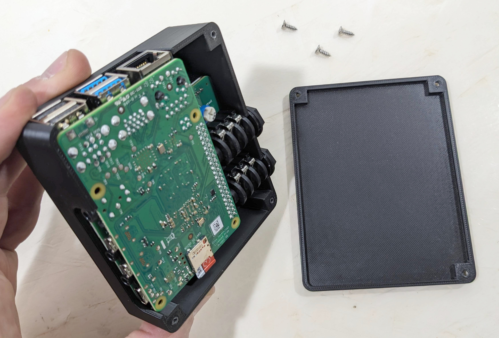

Assembly¶
This section explains how to assemble a SquishBox from a kit, or from individually sourced parts after obtaining a fabricated PCB, printing an enclosure, and gathering the required through-hole components.
Components¶
In addition to the PCB (with surface-mount components pre-installed) and the 3D-printed PLA enclosure, a standard SquishBox kit includes:
16x2 character LCD
1x6 male header strips (2)
2x20 female header
10K trimmer potentiometer
1/4” TRS audio jacks (2)
2x2 male headers (2)
Jumper blocks (2)
Rotary pushbutton encoder + knob
Optional / Deluxe model:
Momentary footswitches (2)
5mm LEDs (2)

Through-hole components for the SquishBox¶
Electronics Assembly¶
General soldering tips:
Install components on the side of the PCB with the matching silkscreen outline.
Seat components flush against the PCB, especially the rotary encoder, audio jacks, and 2x20 header, so everything aligns properly with the enclosure.
Install the LCD last, as it covers several other solder points.
PCB Orientation¶
The surface-mount components are on the PCB “bottom” side, which faces the Raspberry Pi when installed.
Install these parts on the bottom side:
Audio jacks
2x2 headers
2x20 female header
Trimmer potentiometer
Install these parts on the top side:
Rotary encoder
LCD module (last)

Proper component mounting¶
MIDI Jumper Configuration¶
Headers J2 and J3 configure the MIDI TRS jacks for Type A or Type B wiring using jumper blocks.
As marked on the silkscreen:
Type A: Horizontal connection ( = )
Type B: Vertical connection ( ‖ )

MIDI minijack jumpers in type A configuration¶
LCD Header¶
The center four LCD pads (D0-D3) are unused.
Solder the 1x6 male header strips to the outer pads at each end of the LCD connector.

Correct installation of pins to LCD connector¶
Deluxe Components¶
The Deluxe model adds two LEDs and two momentary footswitches.
LED Installation:
Insert the short leg (cathode / ground) of each LED into the square notched pads on header P1, positions 4 and 7. Insert the long leg into neighboring pads 3 and 8.
Pads 4 and 7 include 1K current-limiting resistors.
Leave enough lead length above the PCB so the LEDs can reach the enclosure openings before soldering.

Proper LED mounting¶
Footswitch Wiring:
Strip and tin four short wires (about 3 cm each).
Wire the switches as follows:
Connect one lug of each switch to P1 pads 12 and 13 (GPIO9 and GPIO10)
Connect P1 pad 14 (GND) to the remaining lug of one switch
Bridge that grounded lug to the remaining lug of the second switch

Footswitch wiring¶
Final Assembly¶
Align the rotary encoder shaft, LEDs (if installed), and audio jacks with the corresponding enclosure openings.
Press the PCB into place and secure it using the washers and nuts supplied with the rotary encoder and audio jacks. Mount stompswitches if used.

PCB mounted in enclosure¶
Install the Raspberry Pi by plugging its GPIO header into the 2x20 socket.
Secure the lid using the three included screws.

Raspberry Pi Installation¶